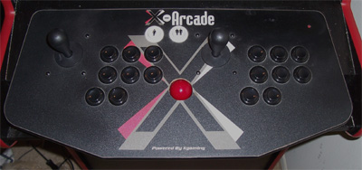
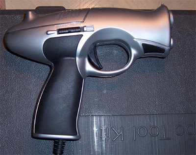

The Hardware
Most of the games I installed were made before 1995, so I didn't need a very sophisticated computer. I used a 2400+ AMD processor with 256 MB RAM. The important thing was that I bought a video card that had an S-video output that could plug into a television. I also needed a lot of USB ports for all the controllers.
I bought a used X-arcade controller from E-Bay for $100. It plugs into the keyboard port. It didn't come with a trackball so I drilled a hole in the middle of the controller and installed the internals of a trackball mouse.

I also bought a light gun from Act Labs and two cheap USB controllers for use with four-player games.

|